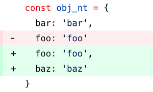
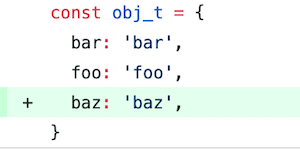

코딩 컨벤션 업무를 하며 알게 된 것들 - 2
이전 글에 이어서 Javascript 코딩 컨벤션 관련 업무를 하며 ESLint 규칙을 통해 알게 된 점을 정리해 보았습니다.
no-prototype-builtins
no-return-await
comma-dangle
1. no-prototype-builtins
ESLint: no-prototype-builtins 규칙은 Object.prototype의 builtin으로 제공되는 메서드를 객체에서 직접 호출하지 않도록 하는 규칙입니다. Object.prototype의 builtin 메서드는 hasOwnProperty, isPrototypeOf 등이 있고 다음과 같은 방법으로 호출할 수 있습니다.
객체에서 직접 호출하는 방법
Object.prototype 을 이용하여 호출하는 방법
const obj = {
name: 'joah',
}
// 1. 객체에서 직접 호출
obj.hasOwnProperty('name'); // true
// 2. Object.prototype을 이용해 호출
Object.prototype.hasOwnProperty.call(obj, 'name'); // trueno-prototype-builtins 규칙에서 객체에서 builtin 메서드를 직접 호출하지 않도록 하는 이유는 다음과 같습니다.
Object.create(null)
ECMAScript 5.1에서 추가된 Object.create 메서드에 null을 인자로 주어 객체를 생성하게 되면 Object.prototype을 상속받지 않게 됩니다.
const obj = Object.create(null); obj.name = 'joah'; obj.hasOwnProperty; // undefined obj.hasOwnProperty('name'); // Uncaught TypeError Object.prototype.hasOwnProperty.call(obj, 'name'); // true따라서 위와 같이 Object.create(null)로 만든 객체에서 builtin 메서드를 직접 호출하게 된다면 에러를 발생시킵니다.
속성이 builtin 메서드를 감추는 경우
객체에 builtin으로 제공되는 메서드와 같은 이름의 키를 객체가 가지고 있다면 예상한 대로 동작하지 않을 수 있습니다.
const badJSON = { 'hasOwnProperty': '1', 'name': 'joah' } // ... badJSON.hasOwnProperty('name'); // Uncaught TypeError Object.prototype.hasOwnProperty.call(badJSON, 'name'); // true예를 들어 위와 같이 악의적인 클라이언트가 builtin 메서드를 감춘 형태의 JSON을 보내는 경우, 객체에서 직접 메서드를 사용해 처리한다면 에러를 발생시킬 수 있습니다. 이런 이유로 no-prototype-builtins 규칙은 builtin 메서드 사용시 Object.prototype을 활용하도록 권합니다.
2. no-return-await
ESLint: no-return-await 규칙은 async function 내부에서 return await을 하지 않도록 하는 규칙입니다. 예를 들어 다음과 같은 경우 입니다.
async function getSomePromise() {
/* ... */
}
async function asyncCall() {
// ...
return await getSomePromise(); // no-return-await 규칙에 걸린다.
}이 규칙에서 return await을 잡아내는 이유는 async 키워드를 붙힌 function은 promise를 반환하기 때문입니다.
async function getSomePromise() {
/* ... */
}
async function asyncCall() {
// ...
// (1) promise가 fulfill 되기를 기다렸다가, 값을 반환함
return await getSomePromise();
// (2) async로 선언되었기 때문에 promise가 반환됨
}
/* 어디선가 asyncCall()을 호출할 때, */.
// ...
// (3) promise가 fulfill 되기를 기다렸다가, 값을 반환함
const value = await asynCall();
// ...위 코드를 보면 (1), (3)이 중복되는 과정이라는 것을 알 수 있습니다.
(1). async function 내부에서 await으로 promise가 fulfill 되기를 기다린 후
(2). fulfill된 값을 다시 promise로 감싸서 반환하고,
(3). asynCall()을 사용하는 곳에서 await으로 promise가 fulfill 되기를 기다리게 됩니다.비록 성능상에 큰 차이가 발생하지는 않지만 불필요한 작업이기 때문에 ESLint에서 걸러낼수 있는 규칙으로 제공하고 있습니다. 하지만 이 규칙에서도 return await을 허용하는 경우가 있습니다.
async function getSomePromise() {
/* ... */
}
async function asyncCall() {
try {
return await getSomePromise();
} catch (e) {
// ...
}
}바로 위와 같이 try catch로 return await을 감쌀 때입니다. await 뒤에 온 promise가 reject될 경우 Error를 throw 합니다. 그리고 그 에러 처리를 try catch를 통해 async 함수 내부에서 처리할 수 있습니다. 때문에 no-return-await 규칙을 사용하더라도 try catch로 감싼 경우는 통과하게 됩니다.
3. comma-dangle
ESLint: comma-dangle 규칙은 trailing-comma를 사용하도록 설정할 수 있는 규칙입니다. trailing-comma는 object나 array의 값, function의 매개변수 등을 나타낼 때 마지막에 콤마(,)를 하나 더 추가하는 것을 뜻합니다. 아래는 trailing-comma의 예시 입니다.
const obj = {
foo: 'foo',
bar: 'bar', // 콤마(,)가 추가 되어있다.
}
// 매개변수 마지막에 콤마(,)가 추가되어 있다.
function func(a, b, ) {} 처음에 규칙을 사용하기만 할 때는 단순한 스타일을 일치시키기 위한 용도인 줄만 알았습니다. 하지만 trailing-comma를 사용함으로써 얻는 장점이 있습니다. 여러 줄로 이루어진 값을 수정할 때, 삭제/추가해야 할 줄만 수정할 수 있다는 점 입니다. 이 장점 덕분에 형상관리 툴에서 수정사항을 비교하기 쉽습니다.
trailing-comma를 사용하지 않았을 때

trailing-comma를 사용했을 때

위와 같이 형상관리 툴의 diff 기능 이용시, trailing-comma를 사용하지 않는다면 콤마가 추가된 라인까지 수정으로 표시됩니다. trailing-comma를 사용시 추가, 삭제가 된 라인만 표시되게 되어 더 깔끔한 비교 결과를 확인할 수 있습니다.
IE6/7/9 Quirks mode 에서는 trailing-comma 가 문제를 일으킬 수 있습니다.